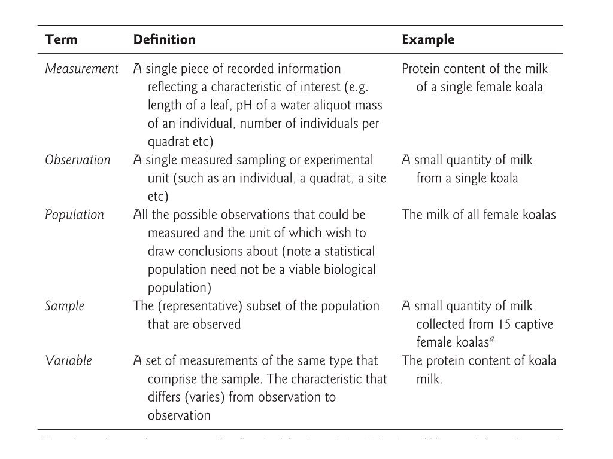
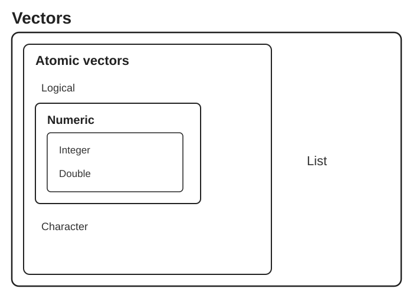

| Gene Expression Data (Tidy Format) | |||
| sample_id | timepoint | gene | expression |
|---|---|---|---|
| S001 | 0h | BRCA1 | 4.2 |
| S002 | 0h | BRCA1 | 3.8 |
| S003 | 0h | BRCA1 | 4.5 |
| S001 | 24h | BRCA1 | 8.1 |
| S002 | 24h | BRCA1 | 7.9 |
| S003 | 24h | BRCA1 | 9.2 |
8 Tidy Data Principles
NoteLearning Objectives
After completing this chapter, you will be able to:
- Define tidy data and explain its three principles
- Identify common problems in messy datasets
- Apply tidy data principles to your own data
- Distinguish between different data types
- Implement best practices for data organization
- Use appropriate file formats for data storage
This chapter is about how to think about and organize data, whether it lives in a spreadsheet, a text file, or a data frame. The small R examples are illustrations you can read without knowing R yet; the tools for actually wrangling data in R (the tidyverse) come in Chapter 14, after R itself is introduced in Chapter 11.
8.1 Why Data Organization Matters
Before you can analyze data, you must organize it. The structure of your data profoundly affects how easily you can work with it. A well-organized dataset can be analyzed in minutes; a poorly organized one might require hours of preprocessing.
Consider this scenario: you’ve completed an experiment measuring gene expression levels in fish embryos exposed to different environmental stressors. You carefully collected samples at multiple developmental stages, ran your assays, and now have a spreadsheet full of numbers. The analysis should be straightforward—just load the data and run some statistical tests.
But then reality sets in. Your spreadsheet has multiple header rows. Some columns contain merged cells indicating experimental blocks. Treatment conditions are color-coded rather than labeled. Missing values appear as empty cells, question marks, or the word “missing” depending on who entered the data. Suddenly, what should have been an afternoon of analysis becomes a week of data cleaning.
This scenario plays out in laboratories around the world, every day. The solution isn’t just better software—it’s better data organization from the start.
A cautionary tale: when Excel renamed the genes
The costs of careless data handling are not hypothetical. Spreadsheet programs helpfully guess what a cell contains, and for years Excel converted the gene symbol SEPT2 into the date “2-Sep” and MARCH1 into “1-Mar” the moment a gene list was pasted in. A 2016 survey of the supplementary files attached to genomics papers found such gene-name errors in roughly one in five of the spreadsheets that contained gene lists (Ziemann et al., 2016), and a follow-up five years later found that the problem had, if anything, grown (Abeysooriya et al., 2021). The errors were so persistent that in 2020 the HUGO Gene Nomenclature Committee changed the official symbols of the affected genes, so that SEPT2 is now SEPTIN2 and MARCH1 is MARCHF1 (Bruford et al., 2020). It is a remarkable thing for a spreadsheet’s autocorrect feature to rename part of the human genome.
The lessons generalize far beyond gene names. Keep raw data in plain-text files (CSV or TSV) that no program will silently reinterpret; never “fix” data by hand inside a spreadsheet, because there is no record of what was changed; and let scripts do the transformations, so that every step is written down and can be re-run. When you must use a spreadsheet for data entry, Broman and Woo’s short paper on data organization in spreadsheets is the best available guide (Broman & Woo, 2018), and its rules are the ones this chapter builds on.
Tidy data provides a standard way to organize data that makes analysis easier. It’s not the only valid way to structure data, but it’s particularly well-suited for analysis in R and Python (pandas follows the same ideas; see Section 12.12). When your data is tidy, you spend less time wrestling with data formats and more time answering scientific questions.
NoteData Wrangling in the Wild
It’s often said that 80% of data analysis is spent on data cleaning and preparation. While this statistic varies by field and project, the underlying truth remains: thoughtful data organization at the start of a project saves enormous time and frustration later.
8.2 The Three Principles of Tidy Data
Hadley Wickham formalized the concept of tidy data in an influential paper (Wickham, 2014). Tidy data follows three rules:
ImportantThe Three Rules of Tidy Data
- Each variable forms a column
- Each observation forms a row
- Each value has its own cell

Wickham’s original paper states the third rule slightly differently: each type of observational unit forms its own table (we return to this in Section 8.4.4). The rules are interrelated—it is impossible to satisfy only two of the three—which leads to an even simpler pair of practical instructions:
- Put each dataset in a tibble (or data frame)
- Put each variable in a column
Real-world data rarely arrives in this form. Spreadsheets often encode information in column names, spread a single variable across several columns, or combine several variables in one column. Data wrangling is the process of transforming such messy data into tidy data, and the rest of this chapter is about the tools for doing so.
Let’s unpack what the three rules mean.
Variables as Columns
A variable is a characteristic that you measure, observe, or categorize. Examples:
- Gene expression level
- Treatment group
- Patient age
- Sample ID
- Measurement date
Each variable should have its own column with a descriptive header.
Observations as Rows
An observation is a single unit of data collection—typically one measurement from one subject at one time point. Each observation gets its own row.
Values in Cells
Each cell contains exactly one value. No merged cells, no multiple values crammed together, no implicit values indicated by color or formatting.
8.3 Tidy vs. Messy Data: Examples
A Tidy Dataset
This is tidy because:
- Each column is a variable (sample_id, timepoint, gene, expression)
- Each row is an observation (one expression measurement)
- Each cell has one value
A Messy Dataset (Same Data)
A common messy format spreads measurements across columns:
| Gene Expression Data (Messy Format) | ||
| sample_id | BRCA1_0h | BRCA1_24h |
|---|---|---|
| S001 | 4.2 | 8.1 |
| S002 | 3.8 | 7.9 |
| S003 | 4.5 | 9.2 |
This is messy because:
- Time point and gene are embedded in column names
- Each row represents multiple observations
- Adding genes or timepoints requires adding columns
Why It Matters
With tidy data, operations are straightforward:
| timepoint | mean_expression |
|---|---|
| 0h | 4.166667 |
| 24h | 8.400000 |
| sample_id | timepoint | gene | expression |
|---|---|---|---|
| S001 | 24h | BRCA1 | 8.1 |
| S002 | 24h | BRCA1 | 7.9 |
| S003 | 24h | BRCA1 | 9.2 |
With messy data, you must first reshape it—or write complex code to work around the structure.
8.4 Common Data Problems
Problem 1: Column Headers Are Values
Often, column names contain data values rather than variable names:
| country | 2020 | 2021 | 2022 |
|---|---|---|---|
| USA | 331 | 332 | 333 |
| Canada | 38 | 38 | 39 |
| Mexico | 129 | 130 | 131 |
Solution: “Pivot” the data to create a year column:
| country | year | population |
|---|---|---|
| USA | 2020 | 331 |
| USA | 2021 | 332 |
| USA | 2022 | 333 |
| Canada | 2020 | 38 |
| Canada | 2021 | 38 |
| Canada | 2022 | 39 |
| Mexico | 2020 | 129 |
| Mexico | 2021 | 130 |
| Mexico | 2022 | 131 |
Problem 2: Multiple Variables in One Column
Sometimes multiple pieces of information are crammed into one cell:
| country | rate |
|---|---|
| USA | 1000/50000 |
| Canada | 200/10000 |
| Mexico | 500/25000 |
Solution: Separate into distinct columns:
Problem 3: Variables in Both Rows and Columns
Complex tables sometimes mix variables across dimensions:
| measurement | subject | control | treatment |
|---|---|---|---|
| weight | A | 70 | 68 |
| height | A | 170 | 170 |
| weight | B | 65 | 64 |
| height | B | 165 | 166 |
This requires multiple steps to tidy: pivot longer, then pivot wider.
Problem 4: Multiple Observational Units
When a single table contains data about different types of things:
# Messy: patient and hospital info in same table
combined_data <- tibble(
patient_id = c("P001", "P002"),
patient_name = c("Alice", "Bob"),
hospital_id = c("H1", "H1"),
hospital_name = c("General", "General"),
hospital_beds = c(500, 500), # Repeated!
diagnosis = c("Flu", "Cold")
)
combined_data |> gt()| patient_id | patient_name | hospital_id | hospital_name | hospital_beds | diagnosis |
|---|---|---|---|---|---|
| P001 | Alice | H1 | General | 500 | Flu |
| P002 | Bob | H1 | General | 500 | Cold |
Solution: Normalize into separate tables linked by keys.
8.5 Best Practices for Data Organization
Naming Conventions
Good names are the cheapest documentation you will ever write, and the shell, R, and Python all reward the same habits. A file name should say what the file contains and, where it matters, when: patient_outcomes_2024-03-15.csv tells you more than data_final_v2.csv ever will, and a date written in ISO 8601 order (YYYY-MM-DD) sorts chronologically when the files are listed alphabetically. Avoid spaces, which every command-line tool treats as a separator between arguments, and avoid characters with special meanings in the shell or in URLs such as & ? * / \ : ( ) ' "; underscores and hyphens are the safe separators. Remember that Unix file systems are case-sensitive, so Data.csv and data.csv are different files; pick one convention (lower case is the usual choice) and keep to it.
Column names follow the same logic with one extra constraint: they become variable names inside your code. Lower case with underscores (sample_id, gene_expression) can be typed without back-ticks or brackets in every language we use, a name should be meaningful (treatment_group, not tg), and it should start with a letter, because a name beginning with a digit is not a legal identifier in R or Python. The course dataset’s fourth column, Geno&Micro, is a small illustration of what happens otherwise: it has to be quoted or renamed in every tool that touches it (Chapter 14).
File Formats
Table 8.3 lists the formats you will meet most often; Appendix C describes them in more detail.
| Format | Extension | Best For |
|---|---|---|
| Comma-separated | .csv |
General tabular data |
| Tab-separated | .tsv |
Data containing commas |
| Plain text | .txt |
Simple data, scripts |
| Excel | .xlsx |
Sharing with non-programmers |
| RDS | .rds |
R-specific data with types preserved |
| Parquet | .parquet |
Large datasets, fast reading |
For long-term storage and sharing, prefer plain text formats (CSV, TSV) over proprietary formats. They’re human-readable and don’t require specific software.
Documentation
A data file is only as useful as the description that travels with it. The standard form is a data dictionary, sometimes called a codebook: a second, small table with one row per variable that records the variable’s name, what it measures, its units, the values or categories it may take, how missing values are coded, where the data came from, and when the file was created or last changed. It need not be elaborate; a README.md or a variables.csv next to the data is enough. The Data_Folder/README.md that accompanies the course dataset (Section 1.5) is an example. Write it while you still remember what the columns mean, because six months later you will not, and neither will the collaborator who inherits the project.
Preserving Raw Data
WarningNever Modify Raw Data
Always keep an unchanged copy of your original data. Create a separate processed version for analysis. This allows you to:
- Retrace your steps if something goes wrong
- Rerun analysis with different preprocessing
- Share the original data with collaborators
Keep raw files in their own directory, with write permission removed if possible (chmod a-w, Section 6.2.2). All cleaning and transformation should be done programmatically, in scripts that can be re-run, with the outputs saved to new files.
Keeping a Data File Clean
The naming rules above cover file and column names; a few further habits keep the contents of a data file usable whether you edit it with Unix tools, R, Python, or a spreadsheet program. Keep the file rectangular: a new observation is a new row and a new variable is a new column, and there is exactly one header row, with concise but descriptive variable names. Write dates in ISO 8601 form, which sorts correctly as text and contains no delimiter characters. Represent missing values the same way everywhere, either as empty cells or as NA, never as a scattering of -, N/A, missing, and ?. And keep the data dictionary from Section 8.5.3 alongside the file so that the two stay in step.
The mistakes to avoid are mostly ways of smuggling information into places where software cannot see it. Do not mix types within a column: if a column holds numbers, every entry is a number or an explicit NA, not a note such as “below detection”, which turns the whole column into text. Do not use the file’s delimiter inside a value, because in a comma-separated file March 8, 2024 becomes two fields. Do not paste from formatted documents such as Word, whose invisible formatting characters can corrupt a file, and do not open a data file in Excel to edit it unless you know what it will silently convert, as the gene-name story in Section 8.1.1 shows. Do not encode information in colour, bold, or cell borders, because formatting is lost the moment the file is exported; put the information in a column instead. And do not leave empty rows or columns as visual separators, since they break the rectangular structure that every import function expects.
TipThe one-line version
One header row, one type per column, one way of writing missing values, no formatting-as-data, and a data dictionary next to the file.
8.6 Data Types
Understanding data types helps you organize and analyze correctly.
Categorical vs. Quantitative
data_types <- tibble(
Category = c("Categorical", "Categorical", "Quantitative", "Quantitative"),
Type = c("Ordinal", "Nominal", "Ratio", "Interval"),
Description = c(
"Ordered categories",
"Unordered categories",
"True zero, ratios meaningful",
"No true zero"
),
Examples = c(
"small, medium, large",
"red, blue, green",
"height, weight, concentration",
"temperature (°C), calendar year"
)
)
data_types |>
gt() |>
tab_header(title = "Data Type Classification")| Data Type Classification | |||
| Category | Type | Description | Examples |
|---|---|---|---|
| Categorical | Ordinal | Ordered categories | small, medium, large |
| Categorical | Nominal | Unordered categories | red, blue, green |
| Quantitative | Ratio | True zero, ratios meaningful | height, weight, concentration |
| Quantitative | Interval | No true zero | temperature (°C), calendar year |
Quantitative data can be further split into discrete values (counts, integers, scores on a fixed scale) and continuous values that can in principle take any value in a range (mass, concentration, expression level). The interval/ratio distinction matters because ratio data support statements like “twice as much” while interval data do not: 20 g is twice as heavy as 10 g, but water at 20 °C is not “twice as hot” as water at 10 °C.
R Data Types
Each of these kinds of data maps onto a specific R type (Table 8.5 and Figure 8.2); the vector types themselves are covered in Section 11.6.
| Data Type | Description | Examples | R Type |
|---|---|---|---|
| Character | Text strings | “control”, gene names | character |
| Factor | Categorical with levels, unordered | Species, treatment groups | factor |
| Ordered factor | Categorical with a meaningful order | “low” < “medium” < “high” | ordered |
| Integer | Whole numbers | Counts, discrete measurements | integer |
| Numeric | Real numbers | Measurements, ratios, continuous data |
numeric (double) |
| Logical | True/false values | QC pass/fail, conditions | logical |
| Date | Calendar dates | “2024-01-15”, collection dates | Date |
| Date-time | Timestamps with time | “2024-01-15 14:30:00” | POSIXct |

# Numeric (continuous)
temperature <- c(37.2, 36.8, 38.1)
class(temperature)
#> [1] "numeric"
typeof(temperature) # stored as "double"
#> [1] "double"
# Integer (the L suffix)
counts <- c(1L, 2L, 3L)
class(counts)
#> [1] "integer"
# Character
sample_names <- c("control", "treatment", "treatment")
class(sample_names)
#> [1] "character"
# Factor (categorical)
treatment <- factor(c("low", "medium", "high"),
levels = c("low", "medium", "high"),
ordered = TRUE)
class(treatment)
#> [1] "ordered" "factor"
treatment
#> [1] low medium high
#> Levels: low < medium < high
# Logical
passed_qc <- c(TRUE, TRUE, FALSE)
class(passed_qc)
#> [1] "logical"
# Date
collected <- as.Date("2024-01-15")
class(collected)
#> [1] "Date"class() reports the type R uses when choosing how to print, plot, or model an object; typeof() reports how the values are stored underneath (a numeric vector is stored as double, a factor as integer). Getting types right matters because statistical and plotting functions treat factors differently from character strings, and arithmetic only works on numeric types.
When to Use Factors
Factors are R’s way of handling categorical variables. Use them when:
- You have a limited set of possible values
- The order matters (ordinal data)
- You want specific grouping in analyses and plots
# Character vector sorts alphabetically
treatments <- c("High", "Low", "Medium", "Low", "High")
sort(treatments)
#> [1] "High" "High" "Low" "Low" "Medium"
# Factor maintains meaningful order
treatments_factor <- factor(treatments,
levels = c("Low", "Medium", "High"))
sort(treatments_factor)
#> [1] Low Low Medium High High
#> Levels: Low Medium High8.7 Structuring Spreadsheets for Analysis
Spreadsheets are not going away, and for data entry they are often the most practical tool in the lab. The trouble begins when a spreadsheet is designed for a human eye rather than for a program. Merged cells that group rows visually, colour that marks a category, a second header row with units, a note typed into a spare cell, a running total at the bottom of a column: each is perfectly legible to a person and each breaks the rectangular structure that read_csv(), pandas.read_csv(), and cut all assume. The result is the scenario at the start of this chapter, in which the first hour of every analysis is spent undoing the layout.
The remedy is to treat the spreadsheet as a data file that happens to have a grid interface. Put the variable names in row 1 and nothing above them. Never merge cells. If a colour means something, add a column that says the same thing in words. Write missing values consistently as NA rather than leaving a mix of blanks, dashes, and N/A. Keep one dataset per sheet rather than spreading a study across tabs, and keep raw data and calculations apart: formulas belong in a separate sheet or, better, in a script, so that the raw sheet is nothing but values. Finally, export the sheet as CSV for analysis, which forces everything the program cannot see to disappear before it can cause trouble. Broman and Woo’s paper on data organization in spreadsheets (Broman & Woo, 2018) develops each of these rules with examples and is short enough to read in an afternoon.
Before and After
The difference between a spreadsheet built for looking at and one built for analysis is easy to see side by side. The “before” version has merged cells for visual grouping, colour-coded categories, several header rows, notes scattered in otherwise empty cells, a column that mixes numbers with words, and embedded calculations that will be silently read as data. The “after” version is a clean rectangle: one header row of well-named variables, one type per column, every piece of information stated explicitly in a cell value, and a second sheet or accompanying file carrying the documentation. Nothing has been lost in the translation; the colours and notes have simply become columns, where a program can read them.
8.8 Summary
Tidy data provides a consistent structure that simplifies analysis:
- Each variable is a column
- Each observation is a row
- Each value occupies one cell
Key principles for data organization:
- Use descriptive, consistent naming conventions
- Document your data with a data dictionary
- Preserve raw data separately from processed data
- Choose appropriate file formats for your needs
- Understand the difference between data types
The tools for putting these principles into practice in R - the tidyverse, dplyr, and tidyr - are the subject of Chapter 14.
Additional Reading
To deepen your understanding of tidy data:
- Tidy Data (Original Paper) by Hadley Wickham — The foundational paper on tidy data principles
- Data Organization in Spreadsheets by Karl Broman and Kara Woo — Practical rules for spreadsheets that will be analyzed by code
- R for Data Science by Hadley Wickham, Mine Çetinkaya-Rundel, and Garrett Grolemund (Wickham et al., 2023) — Chapter 5 covers tidy data
Exercises
TipPractice Exercises
Exercise 1: Identify Tidy Data
For each dataset description, determine if it’s tidy. If not, explain what violates tidy principles:
- Patient data with columns: patient_id, age, blood_pressure_systolic, blood_pressure_diastolic
- Gene expression with columns: gene_name, sample_1, sample_2, sample_3
- Survey data with columns: respondent_id, question, response
- Weather data with columns: city, 2023_temp, 2024_temp, 2023_precip, 2024_precip
Exercise 2: Data Dictionary
Create a data dictionary for an experiment tracking: - Gene expression levels measured at 0, 12, and 24 hours - Three treatment groups (control, low dose, high dose) - Twenty biological replicates per group - Quality control pass/fail flags
Exercise 3: Spot the Problems
Review a dataset you’ve worked with (or your lab’s data). Identify any violations of tidy data principles and propose solutions.